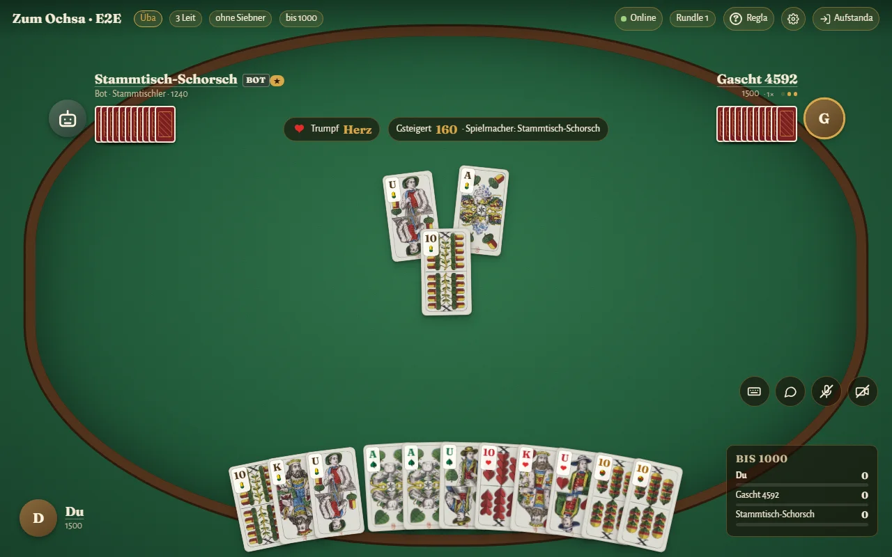

Damian Kostorz
Ich entwickle Apps und Spiele mit Schwerpunkt auf künstlicher Intelligenz: Spiel-Bots, Reinforcement Learning und Werkzeuge für Spieler. Aus dem Esport bringe ich jahrelange Erfahrung in Spielanalyse mit.
Projekte
Binokel Wirtshaus
Online gegen Freunde oder gegen Bots in sieben Stärken. Kostenlos, ohne Werbung, auf Schwäbisch, Deutsch und Englisch. Mit Wertung, Stammtischen, Turnieren, Sprach- und Videochat am Tisch und einer Partie-Auswertung wie beim Schach.

Esport · Dota 2
Als „Ascendancy“ seit 2015 im Dota 2-Esport: Gewinner der ESL Meisterschaft 2020, Analyst des südamerikanischen Profiteams Leviatán und Kommentator internationaler Turniere. Heute Spielanalyse und Coaching für Teams und Einzelspieler.
Kontakt
ascendancydotacontact@gmail.com
Fehler oder Wünsche zu Binokel bitte direkt in der App über „Fehler melden“ oder auf GitHub.